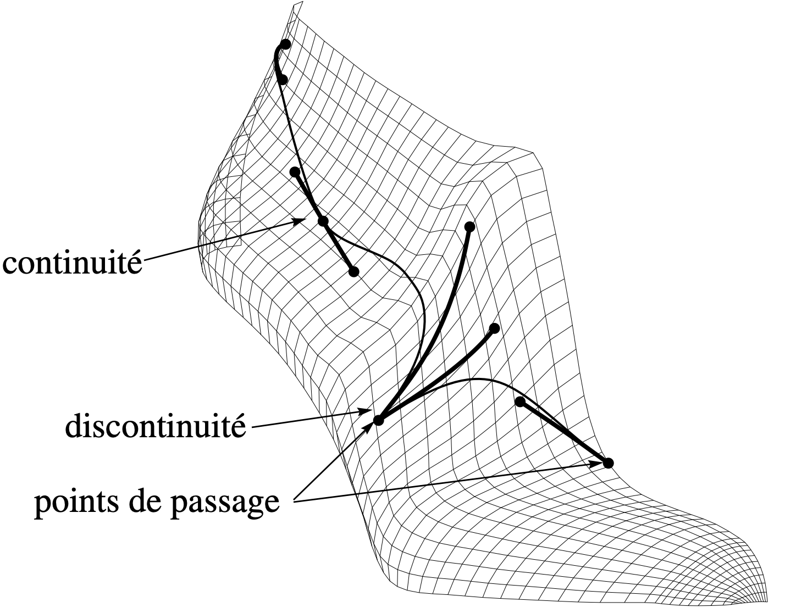

Attention : Site en construction — contenu en cours d’enrichissement avec l'aide d'une IA'
En 1992, j'ai soutenu à l'Université Paris XI à Orsay une thèse sur la modélisation surfacique et le dessin de courbes sur surfaces NURBS — avec un algorithme original, tournant efficacement sous MS-DOS sur des machines équipées d'un processeur Intel 486.
L'acquisition d'un QL Sinclair en 1985, durant ma maîtrise de Mathématiques à Luminy, m'a permis de faire mes premières armes de développement avec le langage C et l'assembleur 68000. C'est aussi avec cette machine que j'ai rédigé ma lettre de motivation pour rentrer dans le DEA du LRI à Orsay.
Je suis entré dans l'univers Apple avec un Mac SE/30 en 1989, avec lequel j'ai découvert Inside Macintosh, Mathematica entre autres choses. À la même période sont apparus les premiers articles sur les machines NeXT et leur système d'exploitation orienté objet, NeXTStep. Je n'ai plus quitté cet univers jusqu'à aujourd'hui, avec l'acquisition dernièrement d'un Apple Vision Pro et de son système d'exploitation visionOS.
C'est en voulant faire renaître mes modestes travaux de thèse sous la forme d'un laboratoire expérimental virtuel que m'est venue l'idée de créer ce site, d'y mettre ma thèse reconstruite avec la version actuelle de LaTeX, et aussi de remettre au propre certaines de mes expérimentations en Mathematica.
Ce site documente le voyage — de 1985 à 2026.